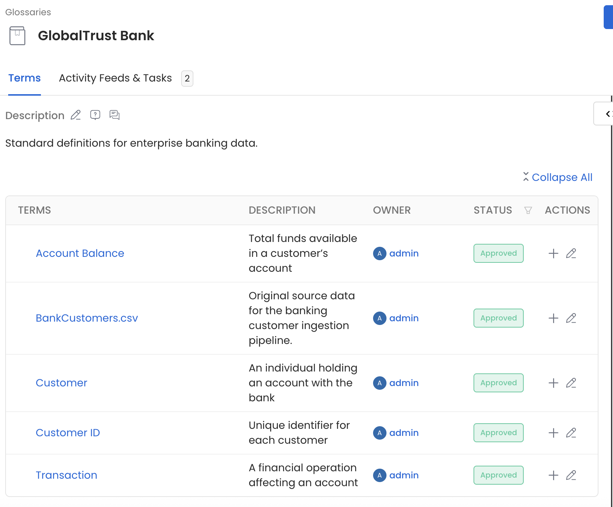
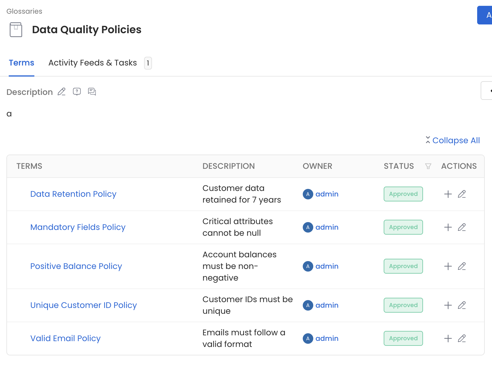
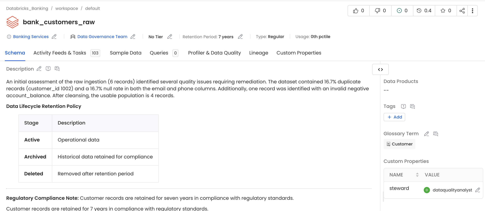
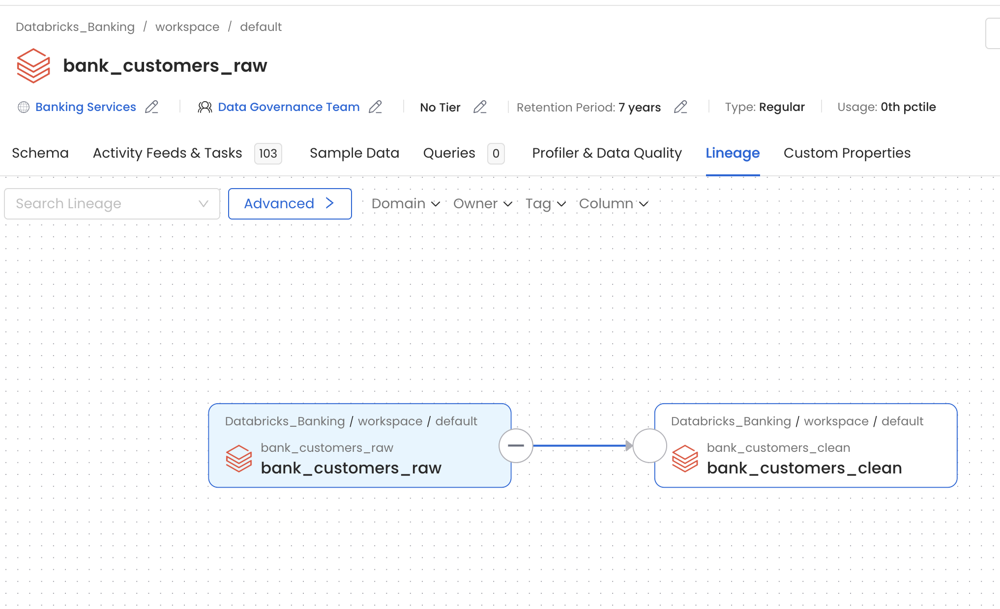
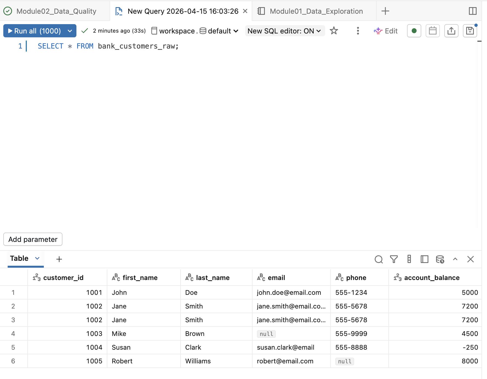
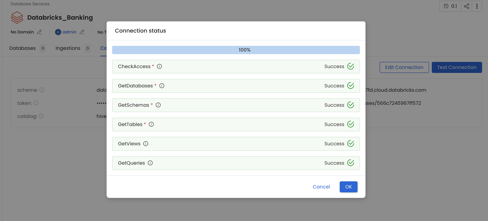
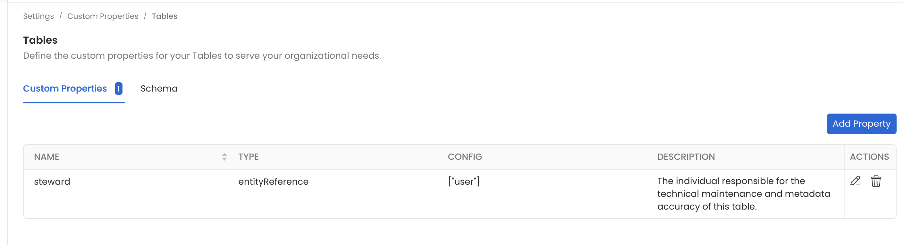
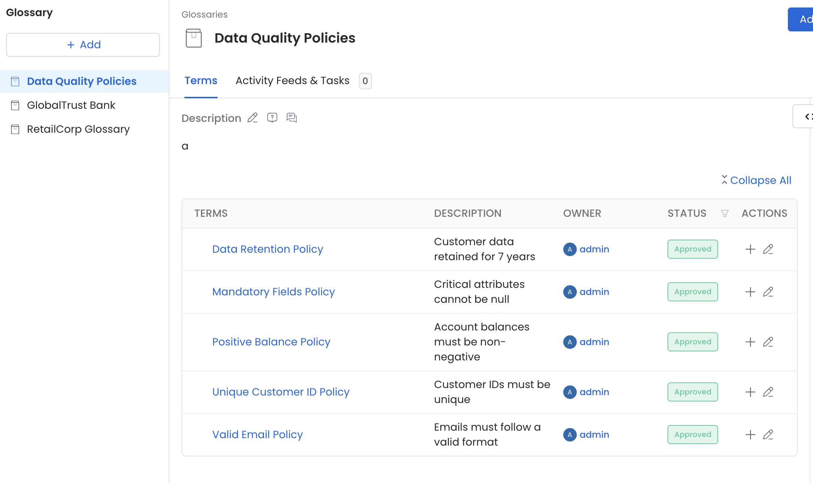
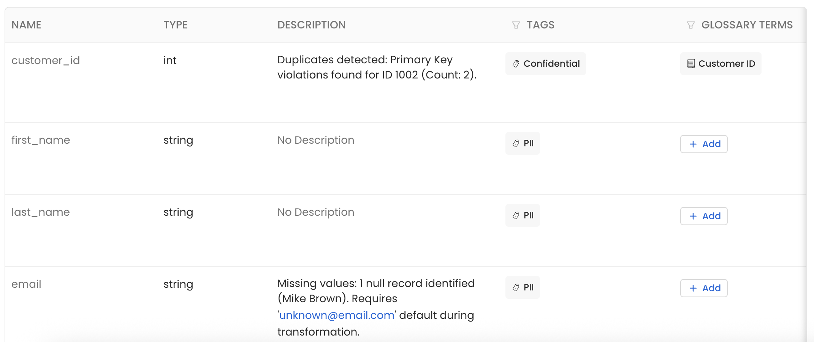
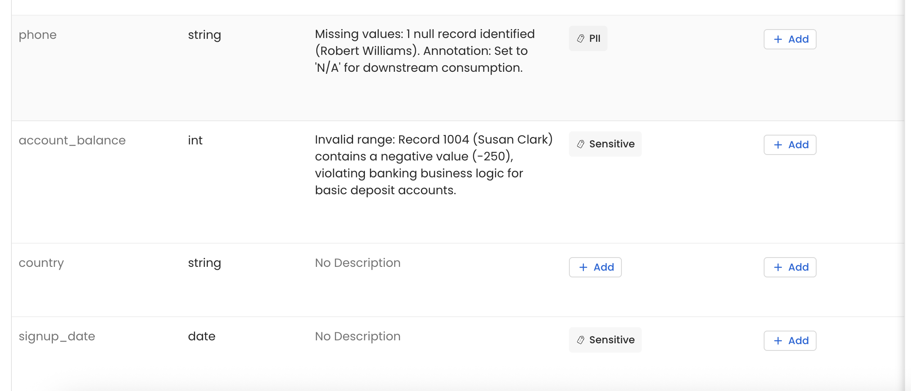

🎓 Student Submission
Module 02 Deliverables
Data Quality & Metadata Management — GlobalTrust Bank Case Study — Clark Ngo
Submission Checklist — 5 / 5 Complete
✓
D2 — Governance Policies
GlobalTrust Bank Glossary — OpenMetadata

📷
01-business-glossary.png
— 5 terms: Account Balance, BankCustomers.csv, Customer, Customer ID, Transaction — all Approved
Account Balance — Total funds available in a customer account •
BankCustomers.csv — Original source data for the banking customer ingestion pipeline •
Customer — An individual holding an account with the bank •
Customer ID — Unique identifier for each customer •
Transaction — A financial operation affecting an account
Data Quality Policies — OpenMetadata Glossary

📷
02-governance-policies.png
— 5 policies: Retention, Mandatory Fields, Positive Balance, Unique ID, Valid Email — all Approved
Data Retention Policy — Customer data retained for 7 years •
Mandatory Fields Policy — Critical attributes cannot be null •
Positive Balance Policy — Account balances must be non-negative •
Unique Customer ID Policy — Customer IDs must be unique •
Valid Email Policy — Emails must follow a valid format
bank_customers_raw — OpenMetadata Schema Tab

📷
03-metadata-catalog-description.png
— bank_customers_raw: DQ summary + lifecycle table + 7-year retention note — Owner: Data Governance Team
Owner: Data Governance Team •
Steward: dataqualityanalyst (custom property) •
Retention Period: 7 years •
Glossary Term: Customer •
Sample Data: 103 rows •
DQ issues documented: 16.7% duplicate records (customer_id 1002), 16.7% null rate in email and phone columns, one negative account_balance record
bank_customers_raw → bank_customers_clean — OpenMetadata Lineage Tab

📷
04-lineage-diagram.png
— Databricks_Banking / workspace / default: bank_customers_raw → bank_customers_clean
Source: bank_customers_raw •
Destination: bank_customers_clean •
Both tables under Databricks_Banking / workspace / default. Lineage manually documented to establish traceability from the ingested CSV through the PySpark cleansing pipeline.
🛠 The Process
We followed a standard Medallion-style architecture to move data from a raw state to a curated, governed state:
🥐 Bronze
BankCustomers.csv
Raw source file — 6 rows with known quality issues
→
🥎 Silver
bank_customers_raw
Ingested to Databricks; profiled and audited
→
🥇 Gold
bank_customers_clean
Deduplicated, nulls handled, negatives removed
⚙
Data Engineering — Databricks
Used PySpark to ingest BankCustomers.csv, performed a quality audit (identifying nulls and duplicates), and transformed the data into two distinct tables: bank_customers_raw and bank_customers_clean.
⇅
Metadata Ingestion
Synchronized Databricks with OpenMetadata to make those tables visible for governance — exposing schemas, row counts, and sample data to the catalog layer.
🔗
Traceability — Lineage
Manually documented the data’s journey, connecting the raw ingestion to the cleaned output so anyone looking at the data knows its “parentage” and transformation history.
🛡
Governance & Compliance
Enriched the metadata with retention policies (7-year storage) and lifecycle descriptions using Markdown tables, and defined five governance policies across the Data Quality Policies glossary.
🧠 Key Learnings
Profiling is Primary
Automated profiling catches business logic errors that simple schema checks miss — such as a negative account_balance for a deposit account. A schema can be “valid” while the data is operationally wrong. Profiling is the step that closes that gap.
The “Vibe” of Metadata
High-quality metadata is not just about technical schemas. It is about documenting why (business descriptions) and how long (retention policies). A table with only a column list is half-documented. A table with ownership, stewardship, lifecycle stages, and a data quality summary is a governed asset.
Traceability is Visibility
Without lineage, a “Clean” table is just a black box — no one knows where it came from or what was done to it. Manually linking the source CSV to the raw table proved how data flows from external storage into the warehouse. Lineage transforms a table into a story.
🛑 Roadblocks & Pain Points
The technical work in the notebook was the easy part; the “people and tools” side of governance provided the real friction:
The “No Freakin Button” Syndrome
A significant roadblock where the OpenMetadata UI hides Add buttons depending on whether you are in a Service (the connection config) or an Entity (the actual data asset). Actions available in one context simply do not exist in the other, with no error or explanation.
Entity Filtering in Lineage Search
The lineage search bar defaults to Tables only. This made it nearly impossible to find the CSV source until switching the filter to Pipeline or Glossary Term. The default filter silently excludes most of the lineage graph.
Volume Invisibility
Internal Databricks Volumes are not seen automatically by standard SQL connectors. The automated metadata scan picked up tables from hive_metastore but had no awareness of the file-based volume where the CSV was stored, requiring manual documentation to fill the lineage gap.
🏁 Final Status
A messy CSV has been turned into a Gold-standard Data Asset:
-
✓
Cleansed — Duplicates removed, nulls handled, invalid balances filtered. bank_customers_clean is operationally correct.
-
✓
Mapped Lineage — Source → raw → clean documented in OpenMetadata. Full traceability established from CSV ingestion to curated table.
-
✓
Documented Lifecycle — Active, Archived, and Deleted stages defined in the table description with a data quality summary covering all identified issues.
-
✓
Assigned Retention Policies — 7-year regulatory retention documented and attached via the Data Retention Policy glossary term.
It has been quite a journey through the “metadata maze.” From scrubbing raw data in Databricks to wrestling with the UI in OpenMetadata, what was effectively built is a miniature governed data platform — with cleansed data, mapped lineage, documented lifecycle, and assigned governance policies.
Supporting Evidence — Setup & Enrichment

📷
00-databricks-raw-data.png
— Raw query: 6 rows — duplicate 1002, null email, −250 balance, null phone visible

📷
00-connection-test-success.png
— Databricks_Banking: connection test 100% — all 6 checks Success

📷
00-custom-property-steward.png
— Settings → Custom Properties → Tables: steward entityReference defined

📷
00-governance-policies-overview.png
— Glossary sidebar: 3 glossaries — Data Quality Policies, GlobalTrust Bank, RetailCorp

📷
00-schema-column-level-tags.png
— customer_id (Confidential), first_name/last_name/email (PII) with DQ notes

📷
00-schema-column-level-tags-2.png
— phone (PII + null note), account_balance (Sensitive + −250 violation note)